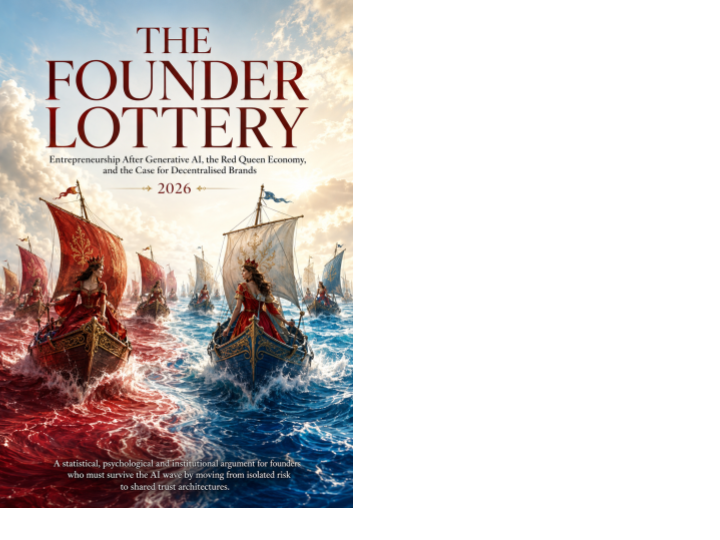

Culture, Care & Experiments · Axiologic Research Editions
The Founder Lottery
Why We Mistake Historical Accidents for Merit
Enter an economy where AI lets almost anyone build faster, yet makes it harder for any one builder to be noticed, believed, or remembered. The question is no longer simply whether you can create something valuable. It is whether entrepreneurship can stop wasting capable people—and whether founders can design markets in which others can win too.
Loading editions…
113 pagesLoading available editions…
Luck, authority and accountability
Founding stories can turn contingency into a claim of natural merit. This book examines that move and searches for forms of authority that remain answerable to those who inherit their consequences.